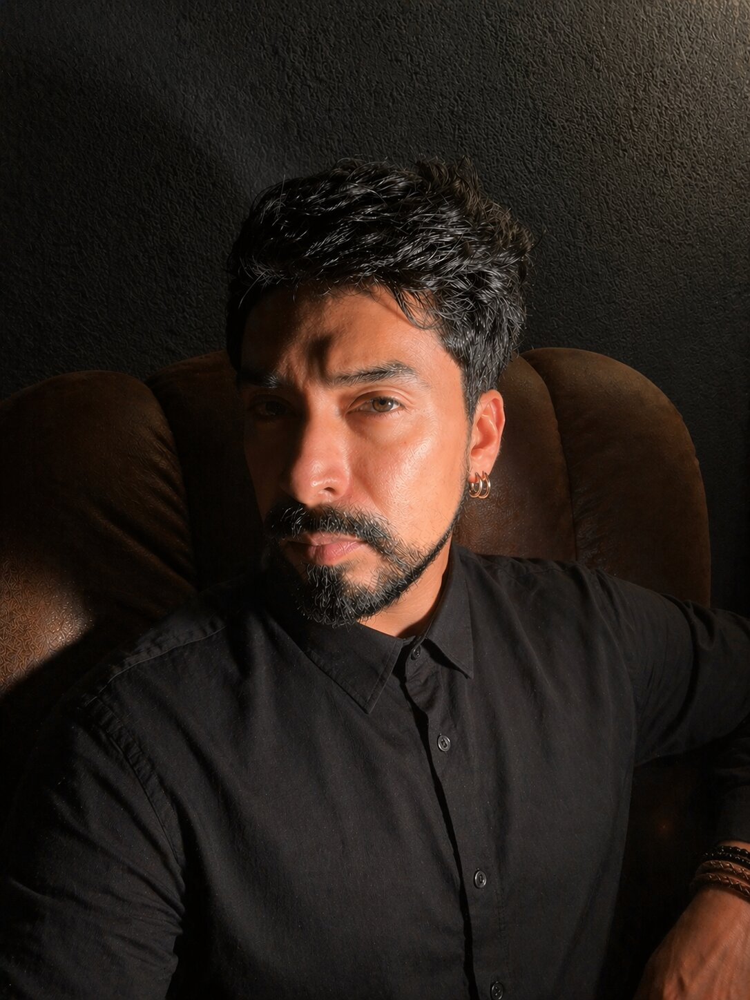

Querétaro, México
Escritura de multiplicidad, de texturas y territorios corporales, donde lo Eterno es el vórtice que habita en tu pecho.
La escritura como movimiento inmanente. Un lenguaje que no describe sino que mancha — signos asignificantes de colores no-diferenciados, en tanto performatividad absoluta del cuerpo.

Samuel Martínez Andrade
Escritor · Poeta
México
Samuel Martínez Andrade es escritor y poeta mexicano. Su obra explora el cuerpo como territorio de conocimiento cósmico, el lenguaje como umbral y materia prima de la experiencia.
Ha publicado seis libros: Despliegue de lo real (Niño Down, 2016), Saturno Milanillos (Broken English, 2018), Removiste la piedra (Herring Publishers, 2020), Y la luna lucía luminosa (Herring Publishers, 2024), Sentémonos en la tierra (Taller de las flores raras, 2025) y ???;) — Pregunta pregunta pregunta guiño (Floresta Efímera · CCEMx, 2025). Sus textos han aparecido en Tierra Adentro (FCE), Punto en Línea (UNAM) y Opción (ITAM), entre otras publicaciones.
Publica Cuadernos del Ser, una bitácora de escritura viva en Substack.
2025
Taller de las flores raras
Poesía IV2024
Herring Publishers
Novela III2020
Herring Publishers
Poesía II2018
Broken English
Novela I2016
Niño Down
PoesíaPoesía · inédito
En escrituraPoesía · inédito
En escrituraPoesía · inédito
En escrituraSubstack · desde 2025
Escritura viva, formas de habitar el lenguaje y el mundo desde el afecto y el cuidado.
Cargando entradas…